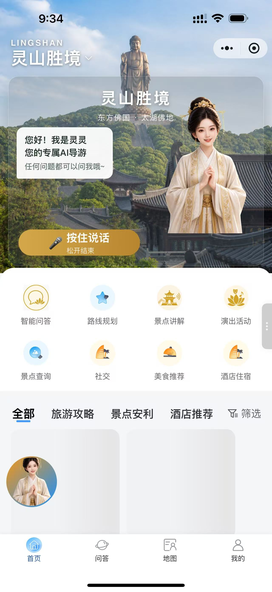
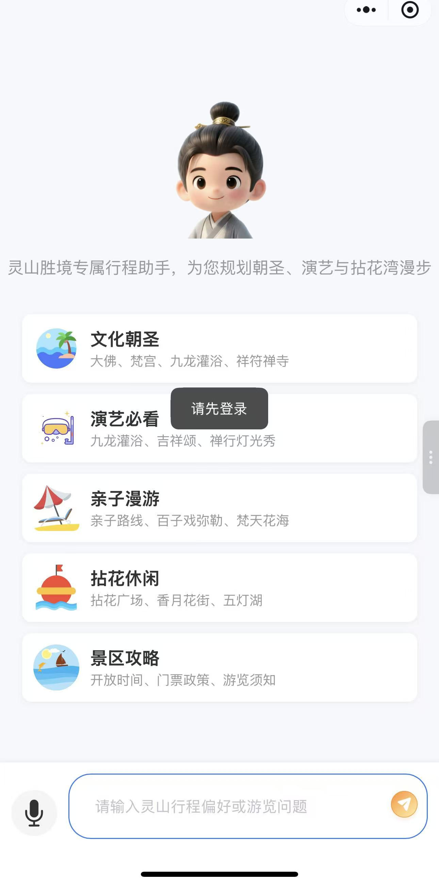
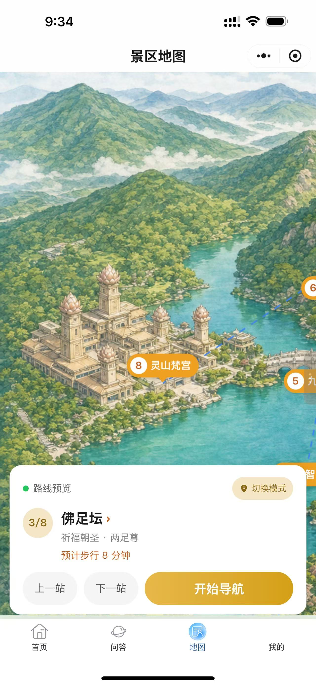
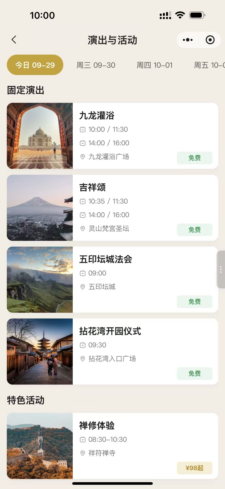
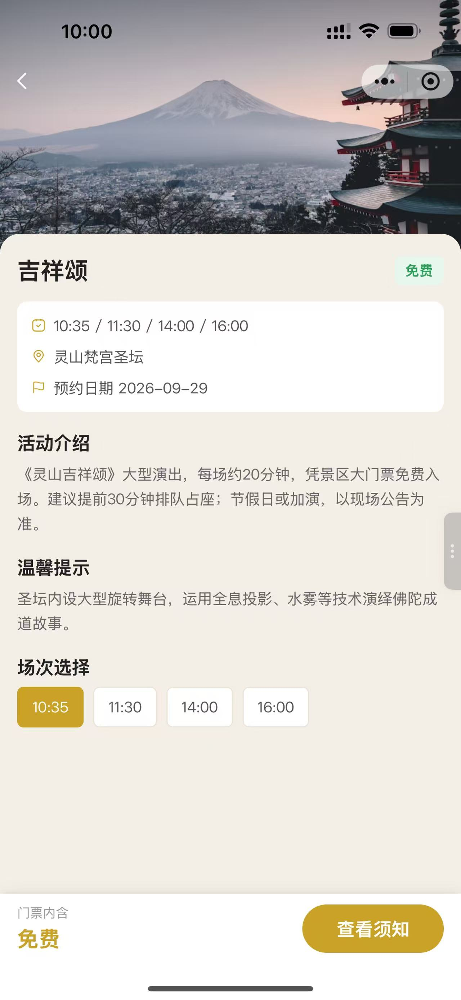
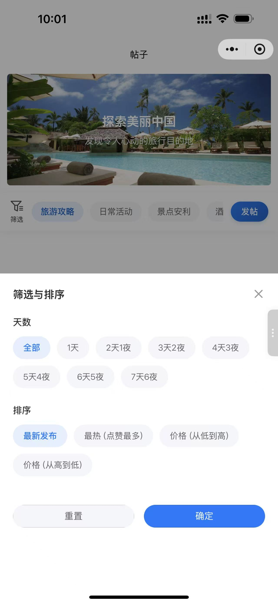
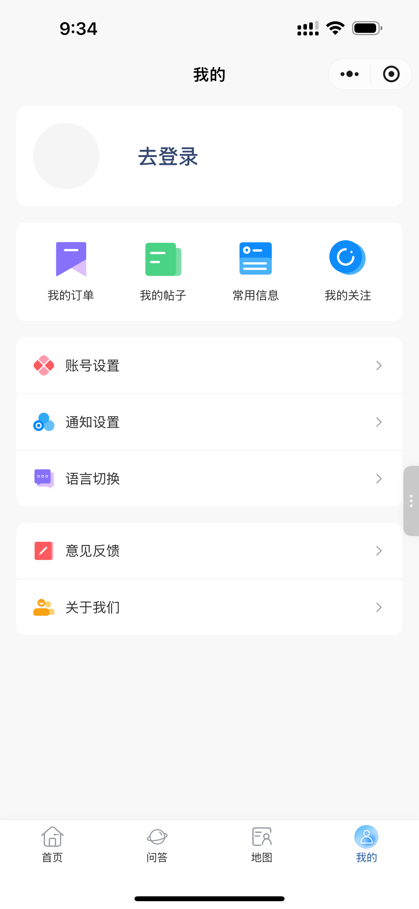

智游侠
Mini Program · AI 文旅DeepSeek + RAG · 2026三创赛 · 旅游电子商务赛道团队项目
「智游侠」是一款基于 DeepSeek 大模型 + RAG 检索增强 的 AI 智能文旅服务平台，聚焦「AI 对话规划 + 全链路交易 + 社交化复用」，使命是让小众旅行更简单。用户输入一句话或一段语音，30 秒即可生成可预订的完整行程，行程节点直连真实商家与交易系统，实现从"内容种草"到"一键下单"的闭环。
本页展示的是景区落地版本（灵山胜境）：AI 导游「灵灵」语音问答、景区地图与路线导航、演出活动预约、旅行社区，覆盖游前规划到游中服务。查看项目 PPT 原件 ↗
01
产品概览
Product Overview

首页 · AI 导游灵灵

智能问答 · 行程规划

景区地图 · 路线导航

演出与活动

演出详情 · 场次预约

社区帖子 · 筛选排序

我的 · 个人中心
02
项目背景与要解决的问题
Problem & Insight
传统旅行规划需要横跨 8 个平台 拼凑信息，决策周期长达 7–10 天；行程与预订彼此脱节，临时调整没有预案，行中缺少精准指引；85% 的用户因信息过载难以筛选出高匹配度产品，容易踩坑。商家侧同样困难：攻略与交易分离，游客看完攻略转向其他平台搜索的过程中流失率超过 80%；中小文旅商家产品同质化严重，依赖 OTA 买量、竞价极高，非标资源（如海岛渔民民宿）无力承担高额推广费。
智游侠的解法是把"规划—交易—服务"压进一条链路：30 秒生成可预订行程、行程与预订实时联动、AI 智能筛选高匹配产品，并以"农村包围城市"的策略深耕小众目的地，避开热门赛道的正面竞争。
03
核心功能
Key Features
AI 对话定制支持文字 + 语音多模态输入，基于 DeepSeek 深度理解复杂意图，30 秒输出可编辑的行程方案
攻略"抄作业"整合 UGC + PGC 攻略库，看到心仪行程一键复制并按需调整，省去手动整理
一键下单SKU 深度绑定，无需跳转第三方；支持合并支付、发票统一开具，转化率 18.7%
个性推荐多维感知构建游客画像，实时推送契合当前位置与偏好的景点、美食与热门活动
安全服务海陆空一体化应急响应：一键呼救、医疗救援与海上联动，实时气象与环境监测
社交社区UGC 垂直旅行社区，内置 AI 润色：输入文字自动优化措辞，快速产出优质帖子
景区地图与导航景区内 LBS 定位与路线规划，演出、活动按场次预约，行中动态调整
商家后台订单管理、产品管理、数据可视化主页、系统监控、租户管理与 API 参数管理，支持低代码配置
溯源电商农海产品"一物一码"溯源，扫码即看产地与采过程，现场自提或快递到家，带动复购
04
技术链路
AI Pipeline & Stack
多模态输入文字 / 语音识别自然语言解析需求，老人与移动场景也能顺畅表达
知识中枢RAG + 40 万+ 垂直语料覆盖交通、景点、美食、娱乐、购物五类数据，覆盖 90% 以上常见旅游场景
生成模型DeepSeek V3行程生成与个性化调整，匹配准确率 96.8%，幻觉率 3.2%，生成耗时 30 秒
交易闭环SKU 绑定 + 合并支付行程节点直接预订，统一开票与售后保障，佣金率 12%（行业 OTA > 18%）
LBS 服务地图 / 导航 / 定位景区内路线规划与实时位置服务，支撑行中动态调整
端与后台微信小程序 + 管理后台小程序端承载用户交互，后台提供订单、产品、租户、监控与低代码能力
05
落地成果
Results & Validation
5.2 万注册用户
18.7%订单转化率
26.3%用户复购率
80+合作商家（民宿 42 家 / 小众景点 23 个 / 本地餐饮 15 家）
试点验证成功以珠海万山群岛"玩转万山"作为首个试点：用户规划时间缩短 60%，景点客流量 +45%，商家营收 +35%
软件著作权原研技术获软件著作权加持，形成可保护的技术资产
企业战略合作 3+与目的地商家 / 机构签订战略合作协议，商业模式得到外部验证
赛事成果三创赛（旅游电子商务赛道）参赛项目，完成从方案到可运行系统的工程化落地
技术工程化实现从实验室模型到工业级系统的跃迁：毫秒级响应、压力 / 兼容性 / 场景化测试
社会价值电商引流激活海岛等小众文旅资源，催生目的地合伙人、运营服务等岗位，助力乡村振兴
06
我在项目中的角色
My Role
担任 视觉营销总监：负责复杂商业逻辑的建模与可视化表达，把"AI + 电商"的闭环链路、盈利模型与落地数据转译成投资人看得懂的语言与画面；主导整套路演 PPT 的信息架构、图表设计与数据呈现，用数据驱动的策略放大项目的核心价值与创新亮点。